Chronicle · Brand v2 · Direction A
The Curator's Room — Board №1
12 generations + 4 stolen references · tap Keep or Kill on each · your call beats mine
ink
walnut
oxblood
brass
lamp green
candle cream
The palette emerging from these images, pulled by eye. Note the green — the banker's lamp keeps voting for itself.
The Ritual — the wax seal
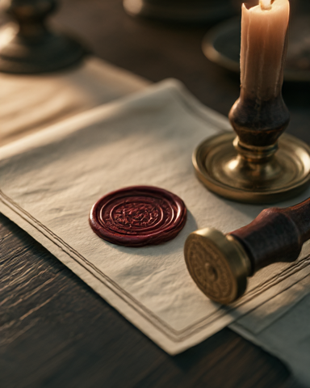
mj-seal-1
Claude: keep
The cleanest statement of the win ritual. One seal, one candle, no clutter.
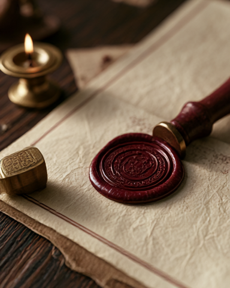
mj-seal-2
Claude: keep — best in show
Look at the paper: ivory with a thin double rule. That's the app's surface language, photographed. This one image could brief the whole UI.
mj-seal-3
Claude: maybe
Useful for the stamp handle itself, but two seals and crumpled paper make it busier than we are.
The Wink — Reggie
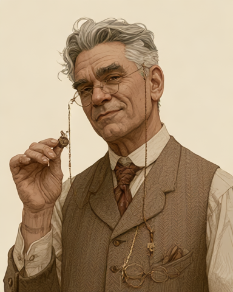
mj-reggie-1
Claude: keep
The best Reggie we have ever had, by a mile. The half-smile IS "grand, with a wink". Warm limited palette, pencil grain, cream ground — drops straight onto ivory UI.
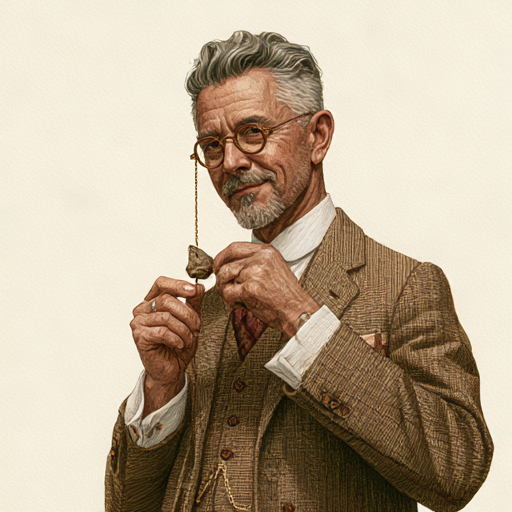
mj-reggie-2
Claude: maybe
Proves the style can repeat across poses — important for a 5-pose set later. But the pose is stiffer and the dangling artifact reads oddly.
The Materials — brass & walnut
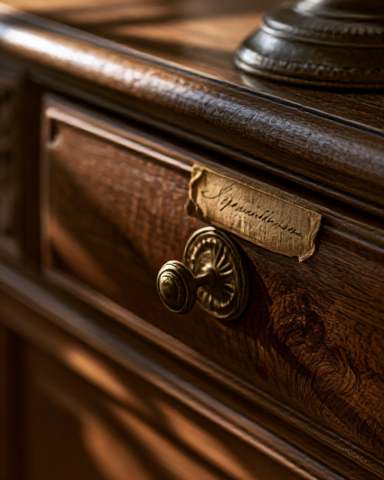
mj-brass-macro-1
Claude: keep
A drawer that wants to be the Archive. The raking light across the grain is the texture brief for dark surfaces.
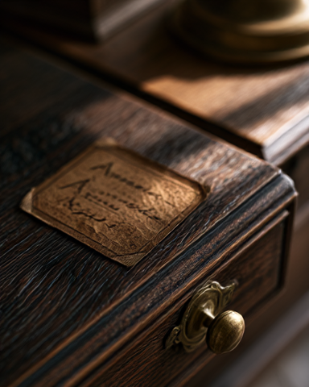
mj-brass-macro-2
Claude: keep
The inlaid parchment label on dark oak could literally become the game-card design language: cream label, dark ground, brass accent.
The World — the study
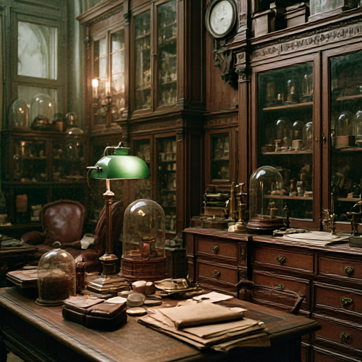
mj-study-1
Claude: maybe
Mood is right; finish is slightly video-game. Fix is easy: retake using your real Soane office photo as a style reference. Worth one more roll.
mj-study-motion (animated)
Claude: maybe
Same scene, animated. Parked unless we ever want a living header — nice to know the option exists.
The Artifact — mood only, never the real thing
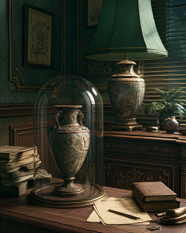
mj-vase-dome-1
Claude: keep as mood
Glass dome + lamp green + walnut sings. But the vase itself is an invention — Midjourney made up a Roman artifact. Mood board yes; near the app's collection, never.
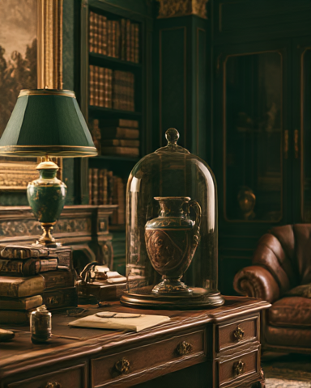
mj-vase-dome-2
Claude: maybe
Lush, but heavier — more gentleman's club than museum. Same invented-artifact caveat.
The Stolen References — the real Soane's Museum
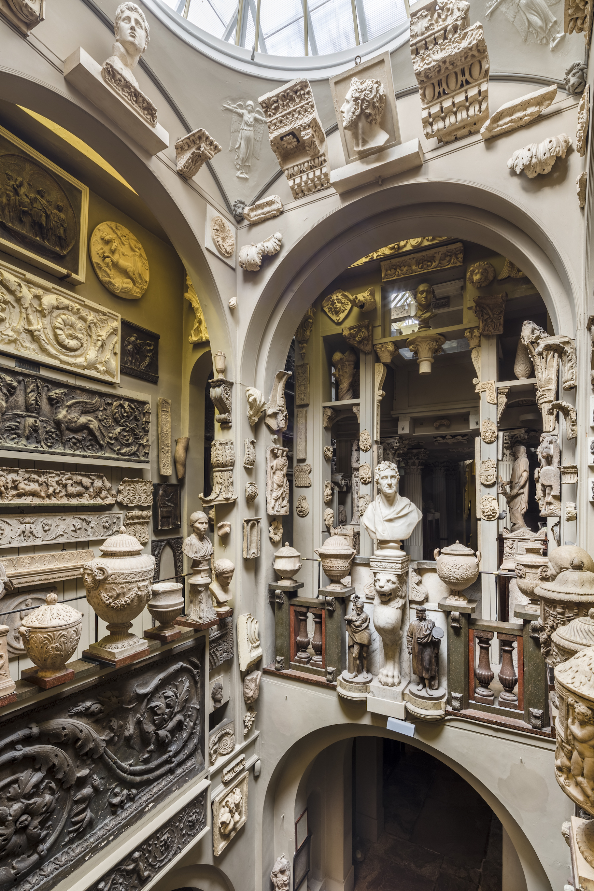
ref-soane-dome
reference
Density done with love, bone and ivory under a skylight. This is the ceiling the AI images should aspire to.
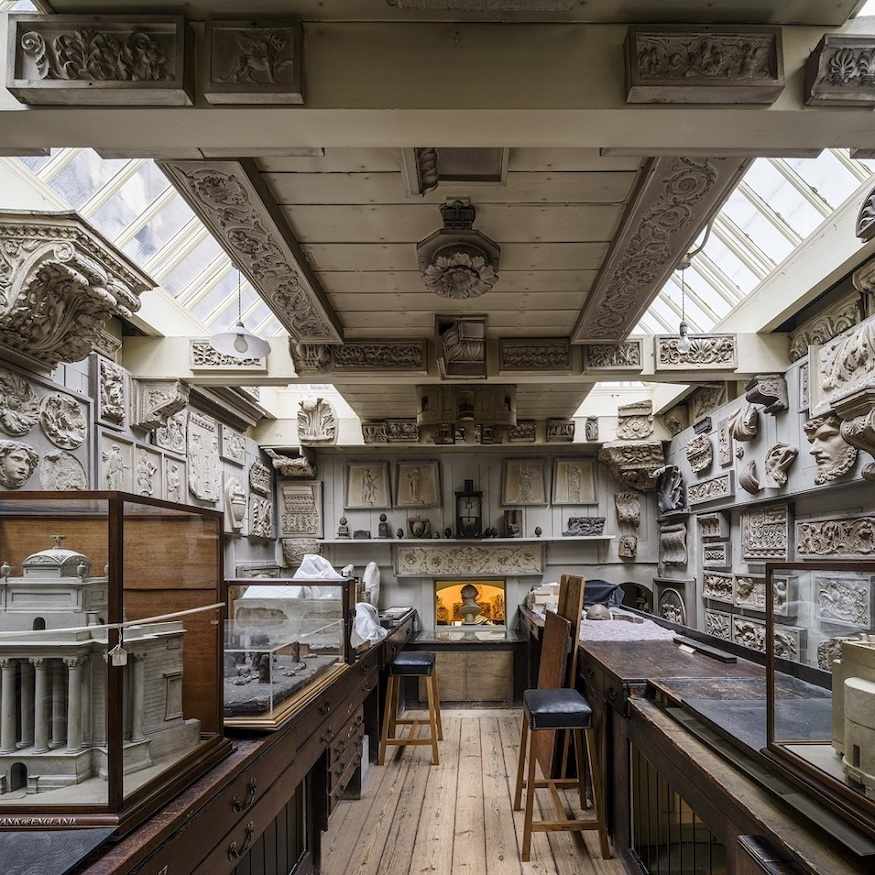
ref-soane-office
reference
The working room — cases, models, daylight. Your best style-reference fuel for retaking the study shot.

ref-soane-picture-room
reference
Olive-grey walls + gilt frames + mahogany wainscot. Quietly the most app-translatable image on this board: dark panel, framed plates, warm trim.
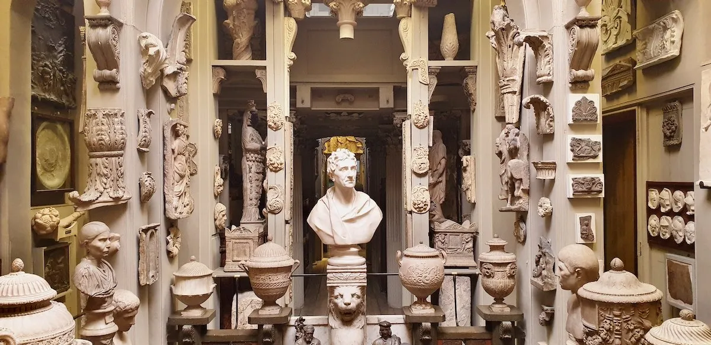
ref-soane-sculpture
reference
The bust holding court in a crowd of fragments. Composition lesson: one hero, many whispers.